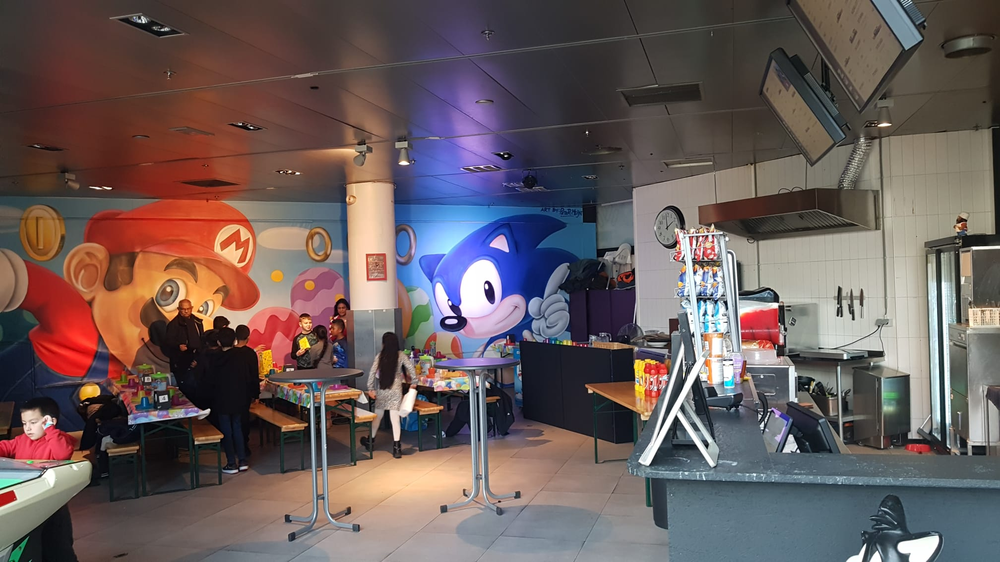
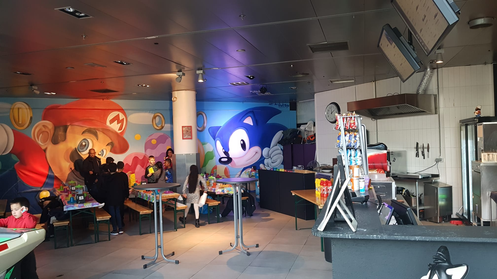

In 2016, Hasan came into contact with Jan Kragt, city marketer of the municipality of Zoetermeer, who, deeply impressed by the collection, suggested the idea of turning it into a museum and establishing a foundation for that purpose.
On the spot, Hasan and Jan came up with the name and the National Video Game Museum was born.
Together with several key players in the Dutch game community, the National Videogame Museum Foundation was then created.
The city council was enthusiastic about the idea and decided to support the museum financially. This made it possible to rent a heated storage facility where the entire collection could be housed and partially exhibited.
In early 2017, in close cooperation with the municipality, a real museum location was found: the former V&D building in Zoetermeer's city center.
The museum also lets its visitors experience the games of tomorrow.
Gamers young and old are welcome to play, discover, learn and share experiences online.
During school vacations, we are also open on Mondays and Tuesdays. Children under 10 years of age may enter the museum only when accompanied.
 
